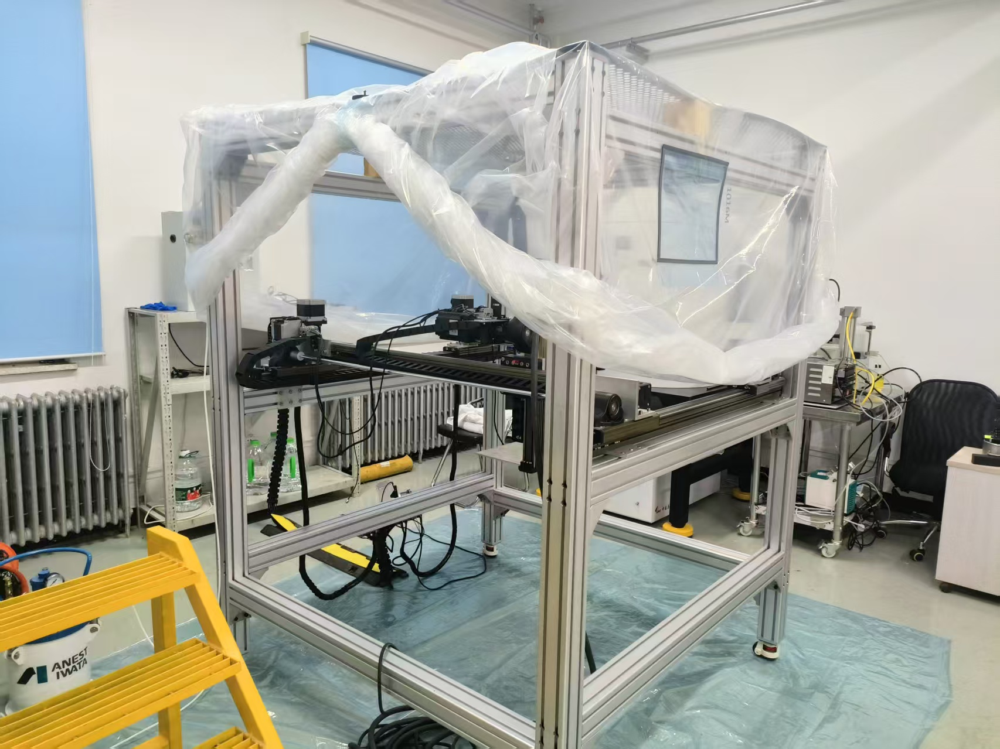

“101堆”退役切割释放气溶胶中 ⁶⁰Co、¹³⁷Cs 分布规律研究
毕业设计 · 辐射监测 · 源项分析
面向“101堆”退役场景，开展等离子切割一回路管道释放放射性气溶胶的在线监测与分级采样；参与设计实验流程和方法，结合 CNT 理论与测量结果分析气溶胶释放行为及核素分布，并建立数学模型，使用 Python 开发预测气溶胶特征的模拟软件。
在线监测分级采样源项分析Python 建模
02 / RESEARCH
研究聚焦核设施退役场景中的放射性气溶胶，并拓展至核药研发、辐照计算与内照射剂量评估。
面向“101堆”退役场景，开展等离子切割一回路管道释放放射性气溶胶的在线监测与分级采样；参与设计实验流程和方法，结合 CNT 理论与测量结果分析气溶胶释放行为及核素分布，并建立数学模型，使用 Python 开发预测气溶胶特征的模拟软件。
与协和医院合作，基于 Y₂O₃-SiO₂ 二元玻璃体系确定配方，经湿法球磨、离心喷雾干燥、射频等离子体球化和多阶筛分制备钇-89玻璃微球前体，再通过反应堆辐照实现 ⁸⁹Y(n,γ)⁹⁰Y 转换。
参与钇-89玻璃微球的完整生产过程与工艺改进，并使用 Geant4 对反应堆内中子辐照过程进行蒙特卡洛模拟，为辐照位置和时间的选择提供参考。
研究不同切割方式产生气溶胶的粒径与放射性分布差异，依据 ICRP 内照射剂量学模型和计算标准，评估不同切割工艺产生的吸入内照射危害，形成预评估方法。

研究箱室内放射性气溶胶输运路径，在手套箱内开展发生实验，建立荷电影响传输参数化方案，定量评估荷电特性对凝并与沉降的影响，并使用 Aerosolved 完成模拟验证。
以第一作者身份发表《等离子切割101堆一回路管道放射性气溶胶的粒径分布与核素释放特性》，论文已被 EI 收录。
NEXT CHAPTER